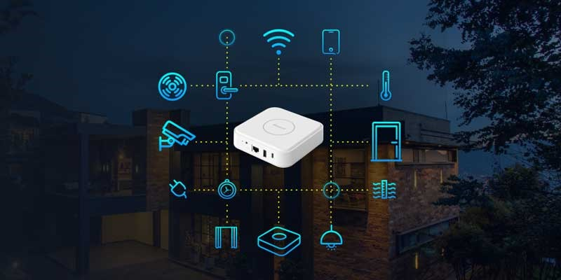

Projects 1
SmartHomeHub
A smart home hub serves as the central control system for an interconnected network of smart devices within a home, seamlessly integrating various technologies to enhance automation and convenience.This innovative device acts as the nerve center, allowing users to remotely manage and monitor their smart home ecosystem through a single interface, often accessible via a mobile app or voice commands.Compatible with a wide range of smart devices such as lights, thermostats, security cameras, and appliances, the hub facilitates efficient communication and coordination between these gadgets, fostering a cohesive and intelligent home environment. With features like customizable automation routines, real-time notifications, and energy management capabilities, a smart home hub not only simplifies daily tasks but also promotes energy efficiency and security, providing users with a sophisticated and interconnected living experience.Un Smart Home Hub es esencial en un hogar inteligente, ya que actúa como el cerebro central que facilita la comunicación entre dispositivos de diferentes marcas y protocolos. Permite la automatización y el control centralizado de escenas, garantiza la seguridad del hogar al integrar sistemas de vigilancia y sensores, y contribuye a la eficiencia energética al gestionar dispositivos relacionados con la energía. Además, proporciona una experiencia de usuario simplificada, facilita la expansión del sistema y puede integrarse con asistentes virtuales. La selección de un hub debe basarse en la compatibilidad con los dispositivos específicos y las características de seguridad ofrecidas.

Projects 2
Virtual Assistant
A vitual assistant is a software or AI-driven application designed to assist users with
various tasks, typically through voice or text interactions. These assistants can perform a
wide range of functions, such as providing information, scheduling appointments, setting
reminders, and controlling smart devices. Virtual assistants often utilize natural language
processing and machine learning to understand and respond to user queries
effectively.Virtual assistants have gained popularity in recent years due to the
proliferation of smartphones and smart speakers. Leading virtual assistants include
Apple's Siri, Amazon's Alexa, Google Assistant, and Microsoft's Cortana. They can
answer questions, make recommendations, and even engage in casual conversations,
making them versatile tools for both personal and professional use.The technology behind
virtual assistants continues to evolve, with ongoing improvements in speech recognition,
understanding context, and personalization. Virtual assistants are integrated into a variety
of devices and applications, making them a central part of our digital lives. They have the
potential to enhance productivity, accessibility, and convenience, and their capabilities
are expanding into new domains like healthcare, finance, and education. However, the
increasing use of virtual assistants also raises questions about privacy, security, and data
handling, which must be carefully addressed as these technologies advance.